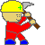

Quizz
L'assemblage de la matière : drôle de jeu de construction !
Équation bilan
Evaluation

Fin de page |
 |
Constitution de la matière
 |
| Vocabulaire | Sommaire |
Dimension
 |
La taille de l’atome est de l’ordre du dixième
de millionième de millimètre c'est à dire
:
( 1 mm / 10 ) / 1 000 000 = 10-10 m = 0,000 000 000 1 m. Il faut imaginer 1 millimètre que l’on coupe en dix puis il faut couper en un million le petit morceau obtenu. Le nombre d’atomes d'une toute petite
parcelle d'un corps est si grand qu'il défie l'imagination
!
La taille des
noyaux des atomes est encore bien plus petite que celle de l'atome.
|
Vocabulaire et histoire
La théorie de l’atome remonte à la Grèce antique. Démocrite ( vers 460 – 360 avant J.C.) eu l’intuition que la matière était faite d’une infinité de petits corpuscules, invisibles, indivisibles et éternels ; et que le monde visible était fait d’un assemblage d’atomes invisibles.Ainsi, l’adjectif grec atomos qui signifie indivisible (qui ne peut être décomposé) est à l’origine du mot atome .
Mais ce sont les chimistes de la fin du XVIII è siècle et du début du XIXe siècle qui ont par des travaux (comme Dalton) et des hypothèses (comme Avogadro) établi définitivement la théorie atomique.
Cent ans plus tard, Thomson et Rutherford
confirment par des expériences
la structure prévue de la matière en atomes et mettent en
évidence l'existence de noyaux
et d'électrons.
Vocabulaire
Sommaire